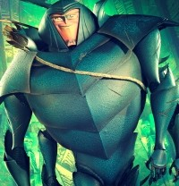
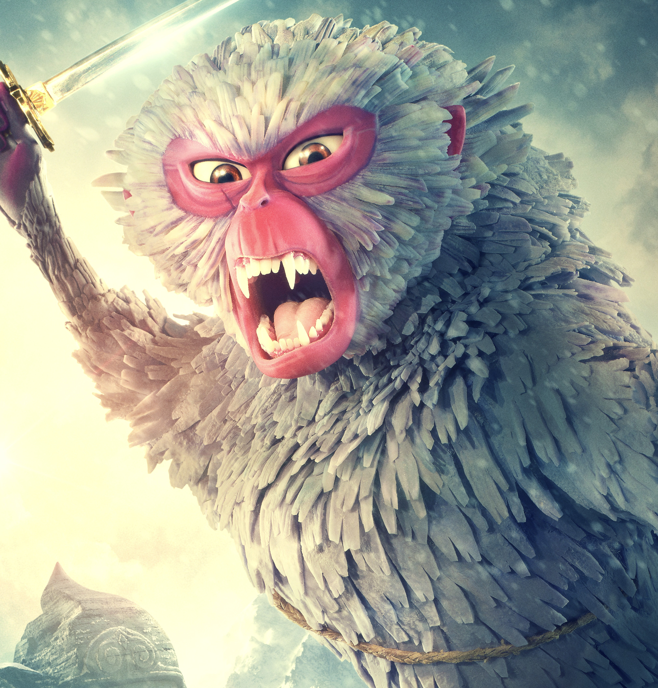
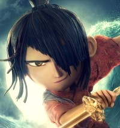

Hanzo / Beetle (Father)
A skilled archer and archer, he traveled the world on many adventures. One of his tales is that he fought Raiden, the Moon King, who is Kubo's grandfather. He was Kubo's long-lost father.

A skilled archer and archer, he traveled the world on many adventures. One of his tales is that he fought Raiden, the Moon King, who is Kubo's grandfather. He was Kubo's long-lost father.

Sariatu is Kubo's mother. She descended from godhood being daughter to the Moon King. She uses divine magic to protect Kubo when his aunties came and attacked. She imbued her power into the small monkey charm that Kubo holds.

He is the son of Sariatu and Hanzo. Using his insturment, he as able to cast magic that can move origami figures about. He sets out on a journey to battle the Moon King and learn more about his family.